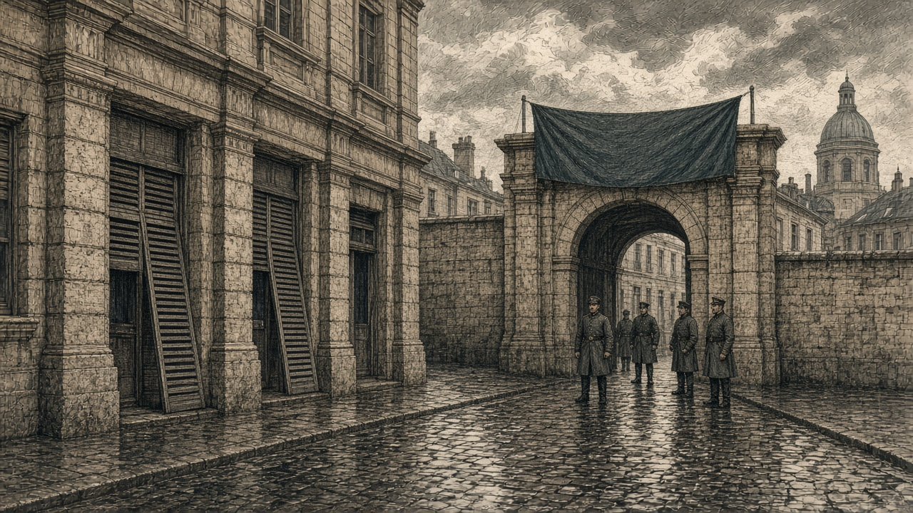

アルヴェナ陥落
緑丘公国、首都防衛に危機
兵站基地も奪われ予備兵1,000人喪失 公国領は7区画に縮小

【総合部】オリョルッル王国軍は第140期、緑丘公国の現代都市アルヴェナ（15,49）を占領した。市街は現代都市の状態を保ったまま王国領となった。同じ期には兵站基地（18,47）も王国軍が奪取し、予備兵1,000人が王国側へ渡った。基地跡は王国領の森となり、公国領は前期の9区画から7区画に縮小した。
第137期の現代都市ノルミア陥落以来、公国は軍港、兵站基地、港、工場など主要施設を次々に失ってきた。前期には別の現代都市が占領され、今期はアルヴェナも陥落した。首都緑丘は公国領を維持するが、王国軍の攻勢は国家存続に関わる局面に達している。
アルヴェナ占領 住民の商いにも不安
第140期のアルヴェナは曇り。前期まで公国領だった街に王国軍が進出した。「王国軍が来たのは分かる。でも、明日から店を開けていいのか、それすら分からない」。商店を営む女性は通りに立つ兵士を見ながら話した。建物や道路が残っても、統治者の交代は商売や行政手続きに影響する。首都緑丘は雨で、なお公国領にある。
首都の歩兵消滅 アルヴェナの徴兵も中止
王国第8軍の砲台は首都緑丘の区画にいた公国第1方面軍の歩兵を攻撃し、部隊を消滅させた。首都の町は引き続き公国領だが、同区画の守備部隊を失った。
公国がアルヴェナで予定していた徴兵は都市の占領で中止された。兵站基地から予備兵1,000人も奪われ、公国軍は部隊と補充の足場を同時に失った。今期の戦果は王国軍2,600人、公国軍400人。累計は王国軍51,900人、公国軍14,500人。詳報2面。
黒潮商船を撃沈 カペレナ軍、兵站基地も占領
【軍事部】カペレナ王国の戦艦は黒潮自治国の商船がいた浅瀬（21,18）を艦砲射撃し、商船を撃沈した。巡洋艦も同じ海域へ砲撃した。商船は前期、同海域で2発被弾し耐久値（HP）2となっていた。王国軍は黒潮の兵站基地（19,18）も占領し、予備兵1,000人を獲得した。跡地は王国領の森となった。詳報3面。
黄砂、黒潮・緑丘と停戦 王国は黄砂に宣戦
【国際部】黄砂同盟は黒潮自治国、緑丘公国との停戦にそれぞれ合意した。緑丘とオリョルッルの戦争、黒潮とカペレナの戦争は続いている。一方、オリョルッルは黄砂に宣戦布告し、開戦は第145期となる。詳報4面。
シンジケート、西方の海に海底都市
【国際部】シンジケート連邦は第140期、アウストレア大陸西方の海域（6,78）に海底都市を建設した。連邦は前期、なのです主義人民共和国との長期戦を終えたばかり。陸上に残る領地は首都プライムと隣接する森2区画で、新たに海へ都市を築いた。詳報4面。
緑丘公国の後退が止まらない。第137期のノルミア陥落以来、王国軍は都市、港湾、工場、軍事施設を次々に奪った。今期はアルヴェナと兵站基地を失い、公国領は7区画に縮小した。首都が残るだけで国家の安全は保障されない。
アルヴェナの占領で徴兵計画は止まり、兵站基地から予備兵1,000人が奪われた。首都区画では第1方面軍の歩兵が消滅した。守る兵を失い、その兵を補う手段も狭まっていることが深刻だ。
公国はすでに軍港、港、工場も失った。軍事施設の喪失は部隊維持を難しくし、生産施設の喪失は戦争を支える経済にも響く。第139期にはカペレナと、今期は黄砂との戦争を終えたが、最大の脅威であるオリョルッルとの戦闘は続く。残る部隊と補充手段を確保し、首都緑丘と7区画を守り抜けるか。アルヴェナの陥落は国家存続の条件がさらに失われたことを示している。